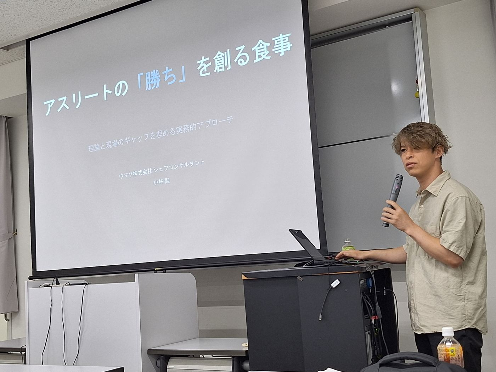
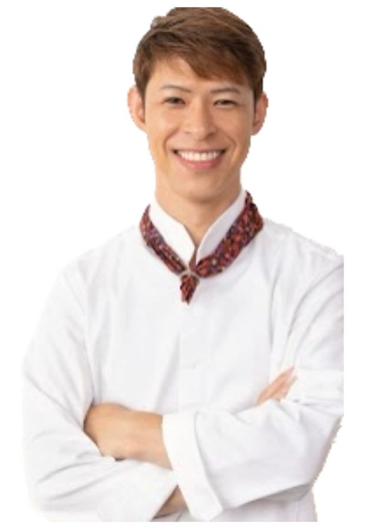

THEME
学べること（予定）
成長期のごはん
主食・主菜・副菜をそろえる考え方と、たんぱく質のとり方。
練習前後の補食
いつ・何を食べるといいか。おにぎりやバナナなど身近な食材で。
朝ごはんのひと工夫
忙しい朝でも続けやすい、簡単で栄養のとれる組み合わせ。
シェフのプロの技
家庭のキッチンで使える、おいしく仕上げる調理のコツ。
※内容・形式（講義／調理デモなど）は回ごとに調整します。
CHEF
講師プロフィール

ウマク株式会社 フードコンサルタント
小林 勉 Tsutomu Kobayashi
- 奈良のレストランや大阪のホテルで修業し、24歳で心斎橋のレストラン「Ottona」料理長に。ピッツェリアや日本料理店の料理長も経験。
- 29歳でイタリアへ。ミラノの一つ星「Innocenti Evasioni」、トスカーナの二つ星「Da Caino」などで修業。
- 31歳で在ケニア日本大使公邸料理長に。各国の要人を寿司・天ぷら・イタリア料理などでもてなし、3年の任期を終えて帰国。
- 2016年、心斎橋にトスカーナ州マレンマ地方の料理に特化したレストラン「Enogastronomico Pitigliano」を開業。2017年 Hanako 関西イタリアン部門グランプリ。
- 現在はウマク株式会社で、アスリートの食事サポートやレストランのコンサルティングを担当。
アスリートフードマイスター®
スポーツフードマイスター®
著書『極上！神ワザレシピ』（徳間書店）
テレビ・ラジオ・雑誌出演多数
INFO
開催概要
- 対象
- 親子、スポーツをがんばる子ども（ジュニアアスリート）とその保護者
- 日程・会場
- 決まり次第お知らせ
- 参加費
- 決まり次第お知らせ
- 講師
- 小林勉シェフ（ウマク株式会社）
- アレルギー
- 試食がある回は、事前にアレルギーの有無をうかがいます。
FAQ
よくある質問
保護者だけの参加もできますか？
はい。毎日のごはんを作る保護者の方だけのご参加も歓迎です。
スポーツをしていなくても参加できますか？
もちろんです。成長期の子どもに大切な食事の考え方は、スポーツをしていない子にも役立ちます。
料理が苦手でも大丈夫ですか？
大丈夫です。家庭で無理なく続けられる、簡単な工夫を中心にお伝えします。
体験・お問い合わせはこちらから
ウマクスクールのお申し込みフォームに移動します。
「食育講習会」にチェックが入った状態で開きます。日程などが決まり次第、ご連絡します。
メールでのお問い合わせ：Umaku.school@gmail.com